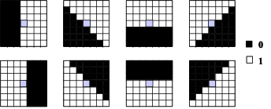
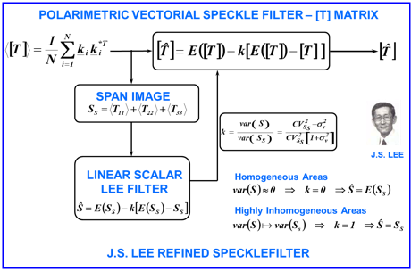

J.S. Lee refined speckle filter
Mathematical Description
Unlike optical remote sensing images, characterized by very neat and
uniform features, SAR images are affected by speckle. Even if speckle confers a
random aspect to SAR images, it may not be considered as a simple noise. It is,
in fact, tightly related to SAR measurement principle.
Speckle phenomenon corrupts polarimetric observables (phase and
intensity) in an important way. Specific procedures have to
be used to retrieve relevant polarimetric information and to reduce the
randomness of the acquired signals.
Synthesized SAR data may be considered as the result of the
integration of a scene coherent response within each resolution cell, resulting
from the convolution of the SAR impulse response with the coherent contribution
of each elementary scatterer. As the number of contributing scatterers, within
a resolution cell, tends to be large (it is the case for common resolution SAR
measurements), the resulting integrated response is random in phase and
amplitude and is shown to follow, over homogeneous areas, a Normal
distribution.
A speckled response is usually represented under the form of a
simple product model: where represents a complex speckled
scattering coefficient, the original unspeckled
scattering coefficient and  the multiplicative speckle contribution.
the multiplicative speckle contribution.
The speckle term,  is composed of independent real and imaginary
parts, following both real centered Normal distribution . The corresponding speckled
intensity, , is given by : .
is composed of independent real and imaginary
parts, following both real centered Normal distribution . The corresponding speckled
intensity, , is given by : .
The principle of speckle filtering consist
in reducing the variance of in order to improve the estimate of
its mean. The sample mean,  , is defined as the empirical
average of L independent realizations of a speckled intensity as follows:
, is defined as the empirical
average of L independent realizations of a speckled intensity as follows:
The J. S. Lee speckle filter
determines the unspeckled intensity estimate that
minimizes a mean squared error following . This MMSE filter is based on
a linearized speckle model leading to the following estimate expression where k is an adaptive filtering coefficient,
based on local statistics, given by with the a priori speckle variance.
Over homogeneous areas, and , whereas over point targets
and highly heterogeneous areas,and the pixel intensity remains
unaffected by the filtering procedure.
In order to reduce
the sensitivity of the adaptive filtering coefficient, , to isolated heterogeneities,
this filter uses directional masks to determine the most homogeneous part of
the sliding window where local statistics have to be
estimated. This modification permits to preserve relatively sharp edges. This
filter is named the J.S. Lee refined
speckle filter.
|
 |
|
|
Speckle filtering is based on incoherent averaging and requires to handle second order representations. The intensity
information used in the scalar case has to be extended
to the vector case when dealing with two or more polarization channels in order to take into account the
different intensities as well as the cross-correlation related information.
A simple way to build an incoherent polarimetric representation
consists in vectorizing a scattering matrix to create a target vector and
computing the corresponding (3×3) covariance matrix or the (3×3) coherency matrix .
A polarimetric speckle filter should be developed based on the
following principle:
● To preserve polarimetric properties, each term of the covariance /
coherency matrix should be filtered in a manner similar to
multi-look processing by averaging the covariance / coherency matrices of the
same neighboring pixels. Like that, all terms of the covariance / coherency
matrix should be filtered by the same amount.
● To avoid cross-talk between polarization
channels, each element of the covariance / coherency matrix has
to be filtered independently in the spatial domain.
● To preserve scattering characteristics, edge sharpness and point
targets, the filtering has to be adaptive, and the
filtering should select neighboring pixels for averaging.
J. S. Lee proposed to estimate the unspeckled
covariance matrix and/or coherency matrix according to the following
corresponding expressions: and .
Where k
remains a scalar coefficient computed from the span
statistics with: .
This approximation is allows to filter
polarimetric data in a fast and simple way and avoids additional coupling (or cross-talk) between the polarimetric channels.
Once the edge-aligned window is selected based on the span, pixels
in the edge-aligned window are then used to compute the mean for each element
of the covariance / coherency matrix and the same filtering weights computed
for the span image are then applied to each element equally and independently.
The computation of the local variance is not required for each element of the
covariance / coherency matrix, because the filtering weights are determined by
the span. Only the local variance of the span image is required for the
computation of the filtering weight. The use of the same weights makes this
algorithm computationally efficient. Additionally, the polarimetric information
is preserved in homogeneous areas, and cross-talk
between channels is avoided. This is because, for each pixel, each element of
the covariance matrix is filtered independently to avoid cross-talk,
and the same edge-aligned window and the same filtering weight are applied to
filter all elements of the covariance / coherency matrix to preserve
polarimetric information. Furthermore, the image sharpness is maintained,
because of the use of edge-aligned windows.
The following figure proposes a flowchart of the J.S. Lee refined
speckle filter when applied on a 3x3 coherency matrix .

References
Books:
● Jong-Sen
LEE – Eric POTTIER, Polarimetric Radar Imaging: From basics to
applications, CRC Press; 1st
ed., February 2009, pp 422, ISBN: 978-1420054972
● Shane
R. CLOUDE, Polarisation: Applications in
Remote Sensing, Oxford
University Press, October 2009, pp 352, ISBN: 978-0199569731
● Charles
ELACHI – Jakob J. VAN ZYL, Introduction To The Physics and Techniques of Remote Sensing, Wiley-Interscience;
2nd edition (July 31, 2007), ISBN-10 0-471-47569-6, ISBN-13 978-0471475699
● Harold
MOTT, Remote Sensing with Polarimetric
Radar, Wiley-IEEE Press; 1st
edition (January 2, 2007), ISBN-10 0-470-07476-0, ISBN-13 978-0470074763
● Jakob
J. VAN ZYL – Yunjin KIM, Synthetic Aperture Radar Polarimetry, Wiley; 1st edition (October 14, 2011), ISBN-10
1-118-11511-2, ISBN-13 978-1118115114
● Yoshio
Yamaguchi, Polarimetric SAR Imaging : Theory and
Applications, CRC Press; 1st ed., August 2020, pp 350, ISBN: 978-1003049753
● Irena
HAJNSEK – Yves-Louis DESNOS (editors), Polarimetric
Synthetic Aperture Radar : Principles and
applications, Springer; 1st edition (Marsh 30, 2021), ISBN
978-3-030-56502-2
Journals:
●
S. Goze, A. Lopes, « A MMSE Speckle Filter for
Full Resolution SAR Polarimetric Data », J.E.W.A., vol 7, n°5, pp 717-737,
May 1993.
●
J.S. Lee, « Digital Image Enhancement and Noise Filtering by
Use of Local Statistics », IEEE Transactions on Pattern Analysis and
Machine Intelligence, Vol PAMI-2, n°2, pp 165-168, March 1980.
●
J.S. Lee, « Refined Filtering of Image Noise Using Local
Statistics », Computer Graphics and Image Processing, 15, pp 380-389,
1981.
●
J.S. Lee, « Speckle Analysis and Smoothing of Synthetic
Aperture Radar Images », Computer Graphics and Image Processing, 17, pp
24-32, 1981.
●
J.S. Lee, « A Simple Speckle Smoothing Algorithm for Synthetic
Aperture Radar Images », IEEE Transactions on Systems, Man and
Cybernetics, Vol SMC 13, n°1, pp 85-89, January/february
1983.
●
J.S. Lee, « Speckle Suppression and Analysis for Synthetic
Aperture Radar Images », Optical Engineering 25(81), pp 636-643, May 1986.
●
J.S. Lee, M.R. Grunes, « Speckle Reduction in Multipolarization, Multifrequency SAR Imagery », IEEE
Transactions on Geoscience and Remote Sensing, vol 29, n°4, pp 535-544, July
1991.
●
J.S. Lee, K.W. Hoppel, S.A. Mango, A.Miller, “Intensity and Phase Statistics of Multi-Look
Polarimetric and Interferometric SAR Imagery”, IEEE Trans GE-32, pp. 1017-1028,
1994.
●
J.S. Lee, I. Jurkevich,
P. Dewaele, P. Wambacq, A. Oosterlinck. « Speckle Filtering of Synthetic Aperture
Radar Images: A Review », Remote Sensing Review, 1994, Vol n°8, pp
313-340.
●
Lopes, R. Touzi, E. Nezry, « Adaptative Speckle Filters and Scene
Heterogeneity », IEEE Transactions on Geoscience and Remote Sensing, vol
28, n°6, pp 992-1000, November 1990.
●
Lopes, E. Nezry, R.
Touzi, H. Laur,
« Structure Detection and Statistical Adaptive Speckle Filtering in SAR
Images », International Journal of Remote Sensing, 1993, Vol 14, n°9, pp
1735-1758.
●
R. Touzi, A. Lopes, « The Principle of Speckle Filtering in Polarimetric
SAR Imagery », IEEE Transactions on Geoscience and Remote Sensing, vol 32,
n°5, pp 1110-1114, September 1994.